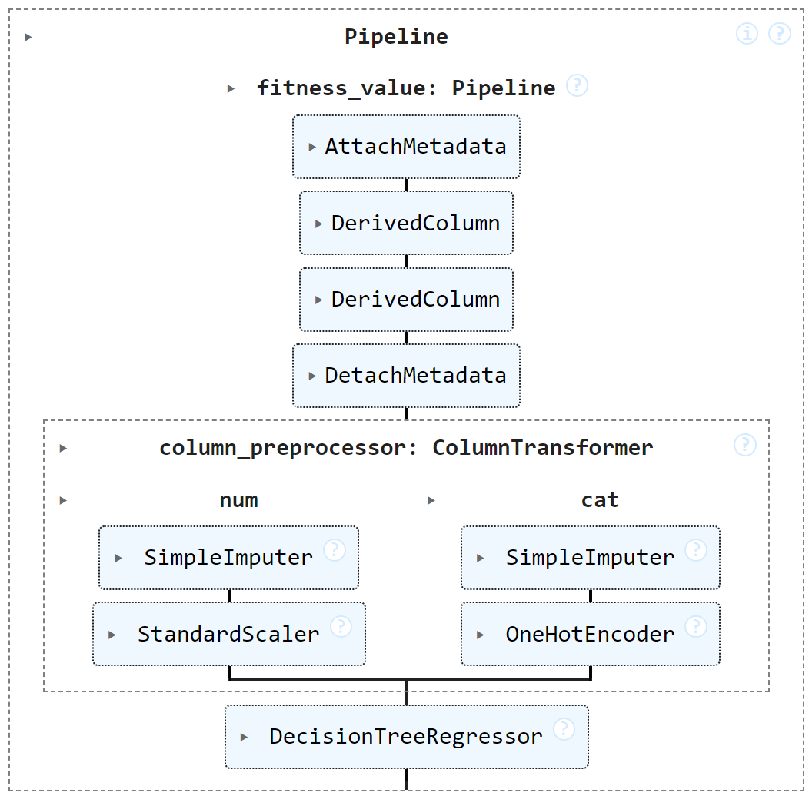

Feature Preprocessing
Design Choices
The Input Data Format is flexible enough to account for the different raw data sources of HR ranking systems.
However, in order to obtain features that can directly be fed to a ranking algorithm (either for training or for prediction), preprocessing of such raw data is typically necessary.
The findhrAPI.preprocess sub-package for data preprocessing aims at providing interfaces to common data transformation tasks, e.g., data cleaning, feature extraction, and feature engineering.
We adhere to the APIs of the scikit-learn library.
Thus, we assume that each preprocessing step is compatible with scikit-learn Pipeline class transforming a DataFrame into another DataFrame.
This allows for reusing the large number of preprocessing transformations compliant to scikit-learn which are already developed both in research and in industry, e.g., transformations for standardizing, normalizing, or imputing missing data.
A critical issue, however, is that scikit-learn does not account for metadata in a transformation, beyond the ones represented by the DataFrame column names and types.
Instead, we assume that rich(er) metadata may be provided for the input data sources (see Input Data Format).
For fairness, explainability, and monitoring tasks, such metadata are a valuable resource that should be tracked across the preprocessing transformations.
Therefore, we augment (not replace!) the APIs of scikit-learn with additional classes able to work on metadata in addition to *DataFrame*s.
We define classes for attaching and detaching metadata, for calculating derived columns, and for other transformations more specifically concerned with typical preprocessing steps in matching candidates’ features with job requirements.
In summary, the preprocessing phase can be split into two subphases:
The first subphase starts from the data sources and tracks the metadata as well as the data; this subphase starts with the pipeline step calling the
findhr.preprocess.mapping.AttachMetadataobject and ends by calling thefindhr.preprocess.mapping.DetachMetadataobject.The second subphase adopts the transformations from the
scikit-learnpackage to further prepare the data for the ranking model, without accounting for the metadata.
The figure below shows an example (see also the Examples).
{kind=link}
Recall that in scikit-learn, the usage of Pipeline objects is twofold: if called on a fit() method, it builds/trains a model; if called on a predict() method, it queries the model and return predictions.
Preprocessing classes
In the following, we list the classes of findhrAPI.preprocess used to track both the data and metadata in a Pipeline data flow:
findhr.preprocess.mapping.AttachMetadataandfindhr.preprocess.mapping.DetachMetadata: the AttachMetadata class is a helper class used to pair the metadata to data in the Pipeline data flow. Its transform method provides in output the pair (data, metadata). The fit method passes through the self object and it is implemented for compatibility with the sklearn.base.BaseEstimator. The DetachMetadata class is a helper used to drop and remember the metadata, as produced by the previous transformations in the Pipeline. Hence, the fit method saves the metadata on the self.metadata_dict attribute, whereas the transform method passes through only the first element of the input pair (data, metadata).findhr.preprocess.mapping.DerivedColumn: this class adds to the data in input one or more derived columns defined by calculations starting from zero or more input columns. The transformation also adds to the input metadata the metadata for the new columns. The calculations are specified in a dictionary having:key: a tuple of two elements. The first element is the tuple of column names that are the input of the mapping. The second element is the tuple of column names that are the output columns of the mapping.
value: an object of class class:findhr.preprocess.mapping.Mapping that implements the calculation function over the input columns.
findhr.preprocess.mapping.Mapping: an interface (or abstract class) for specifying functions that output a derived column taking as input zero or more columns of the input DataFrame. The class inherits fromsklearn.baseclasses BaseEstimator and TransformerMixin, to implement custom transformations as suggested byscikit-learndocumentation.
A few classes inherit from Mapping to implement specific transformations. For such transformation, a feature_importance method returns a dictionary mapping input columns into their importance for the transformation calculation. to Here it is a preliminary list that will be expanded during the project:
findhr.preprocess.example_mappings.YearsOfExperience: sum up the total duration from an array including the property ‘duration’ (or another property specified in the constructor). For example, an array of job positions, each one with a duration property.findhr.preprocess.example_mappings.YearsOfStudy: finds the maximum number of years of study based on the study titles stored in an input column and a knowledge base mapping study titles to years of study to achieve the title.findhr.preprocess.example_mappings.MinValueRequired: indicator function with value 1 if a candidate’s feature is greater or equal than a job-required feature, and with value 0 otherwise. For example, it can be used to calculate if the years of experience are at least the ones required by the job description.
The intended purpose of the above list is to provide an initial set of preprocessing transformations already available in the findhr package. Developers can add their own new classes that adhere to the interface of Mapping in order to take into account domain-specific transformations.
Examples
The notebook Example_Preprocessing in the Examples shows an example of preprocessing built on top of the joining of raw data sources and their metadata obtained from the notebook Example_InputDataSources.
Open Issues
We would like to enable the tracking of metadata also through the usage of the transformations already available in the scikit-learn package. An open question is how to design an interface to leverage the flexibility of such a package. An idea to be explored in the next releases is to design a wrapper class around those transformations.